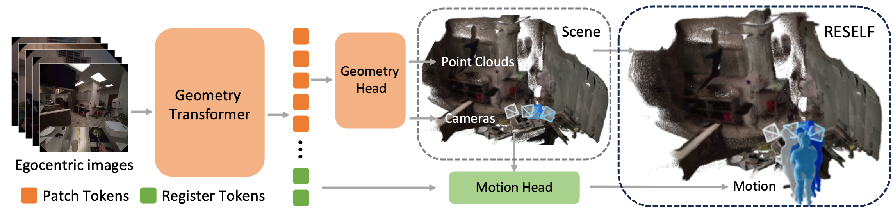
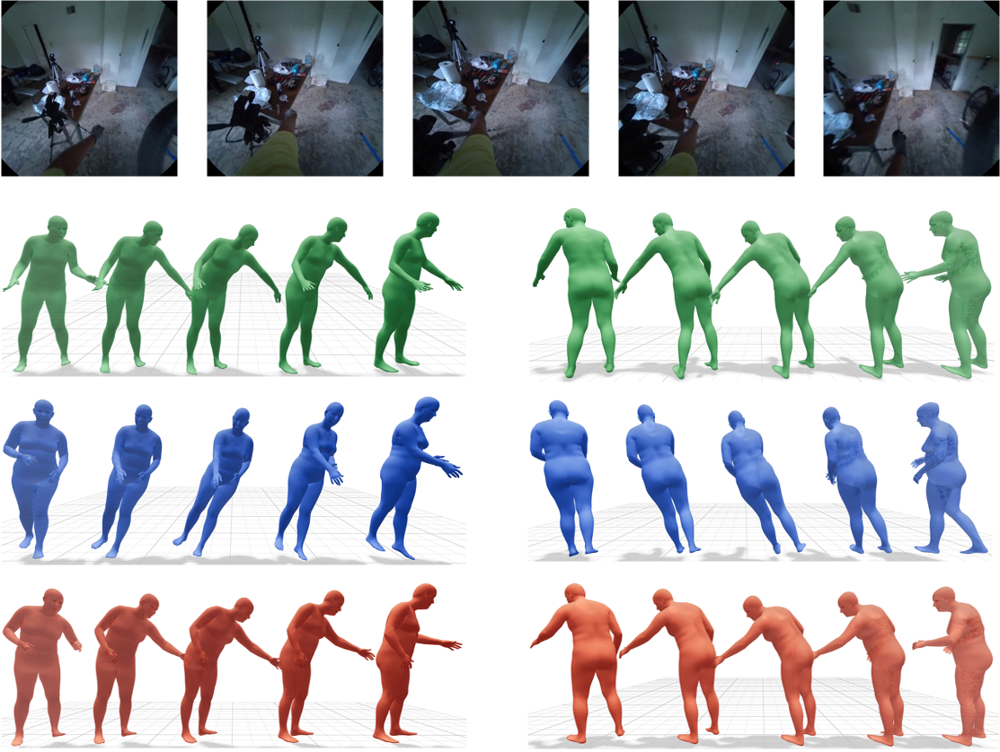
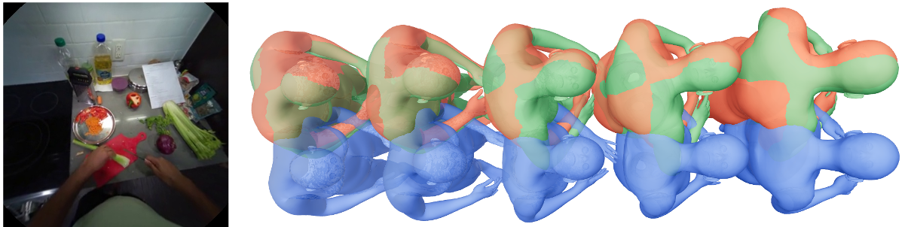

Self-blind
Recovers scene geometry and camera motion, but treats the wearer as absent or dynamic noise.
Research Project
RE-SELF jointly reconstructs metric 3D scene geometry, camera motion, and the unseen wearer's full-body motion from a monocular egocentric video.
1The Hong Kong Polytechnic University 2Eastern Institute of Technology, Ningbo †Equal contribution *Corresponding authors
RE-SELF jointly reconstructs the world and the unseen self from a single egocentric video.
Recovers scene geometry and camera motion, but treats the wearer as absent or dynamic noise.
Infers plausible full-body motion, but lacks explicit metric scene context and often relies on external trajectories.
Couples scene, camera, and SMPL-X motion in a common metric coordinate frame so that each task can support the other.
RE-SELF transfers large-scale exocentric geometry priors to egocentric video, then uses the recovered world to generate the unseen wearer.

Frame-wise metric-scale and relative-egomotion objectives adapt Pi3X to rapid head motion and dynamic ego video.
The camera trajectory anchors global motion, while scene-aware register tokens guide conditional motion diffusion.
A frozen motion prior sends gradients through the differentiable trajectory condition to improve camera tracking.
Select a scene to synchronously compare the egocentric input, RE-SELF reconstruction, ground-truth motion, and four exocentric views.
All seven videos are synchronized. Use the controls below the main views to play, pause, reset, or scrub the selected scene.
RE-SELF improves camera tracking, metric scene depth, body motion, and hand motion under a controlled EE4D-JSM protocol.
Absolute metric scale reconstruction
| Metric | RE-SELF | Second best |
|---|---|---|
| ATE ↓ | 0.022 | Pi3X0.026 |
| RPE Trans. ↓ | 0.010 | Pi3X0.019 |
| RPE Rot. ↓ | 0.341 | Pi3X0.557 |
| Abs-Rel ↓ | 0.141 | Pi3X0.147 |
| δ1 ↑ | 0.873 | Pi3X0.863 |
Egocentric motion reconstruction
| Metric | RE-SELF | Second best |
|---|---|---|
| Head Rot. Error ↓ | 0.268 | UEM0.280 |
| Head Trans. error ↓ | 0.050 | UEM0.066 |
| MPJPE ↓ | 0.110 | UEM0.116 |
| PA-MPJPE ↓ | 0.075 | UEM0.080 |
| Hand-MPJPE ↓ | 0.175 | UEM0.184 |


Built from EgoExo4D and EE4D-Motion, EE4D-JSM aligns egocentric RGB, sparse metric scene geometry, Project Aria camera trajectories, and SMPL-X motion under one training and evaluation protocol.
Controlled ablations isolate the contribution of each stage.
Frame-wise scale supervision reduces scale variation, while relative-egomotion supervision improves short-term camera consistency.
RE-SELF-s1 geometry features improve motion and hand reconstruction beyond trajectory-only and generic DINOv2 conditions.
Kinematic feedback reaches 0.0217 ATE, while an equally trained camera-only control remains at 0.0233.
The complete paper summary is available here without interrupting the visual narrative above.
Complete 3D perception from egocentric video requires recovering the surrounding scene and the wearer's full-body motion in a shared metric frame. Existing methods typically address scene reconstruction and motion estimation separately: scene reconstruction methods ignore the wearer, whereas motion estimation methods lack explicit scene geometry and often depend on external trajectories. We propose RE-SELF, a unified framework that couples deterministic metric geometry reconstruction with geometry-conditioned motion generation. RE-SELF adapts a geometry foundation model to egocentric video using frame-wise scale and relative-pose consistency objectives. Its camera trajectory and latent geometric features condition a diffusion model that recovers the wearer's motion, while closed-loop kinematic feedback further refines the camera head. We also curate EE4D-JSM with aligned scene, camera, and full-body motion supervision. RE-SELF outperforms state-of-the-art methods designed for the individual tasks across depth estimation, camera tracking, and full-body motion estimation.
Please cite the paper if RE-SELF or EE4D-JSM is useful for your research.
@inproceedings{guan2026reself,
title = {Seeing the World and the Self from Egocentric Video},
author = {Guan, Kai and Jiang, Minchao and Wang, Liruichen and Zhu, Wentao and Zhang, Lei},
booktitle = {[Conference]},
year = {2026}
}